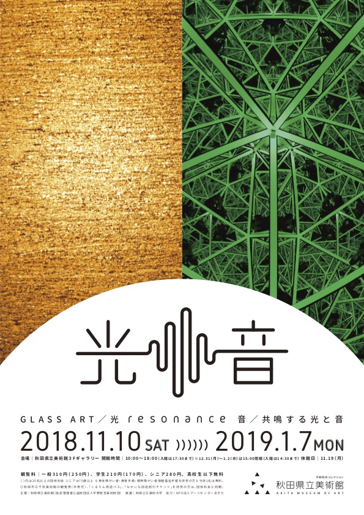
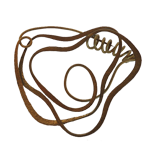
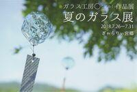
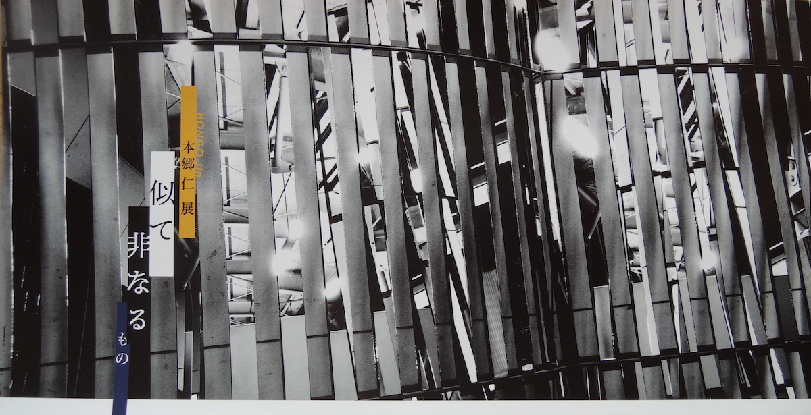
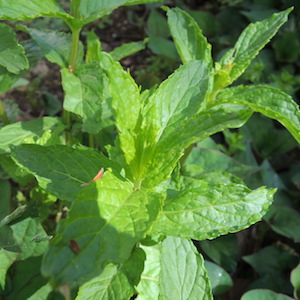
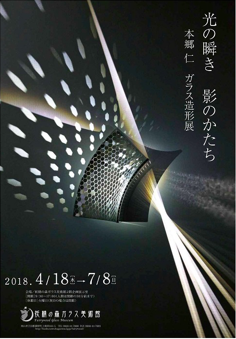
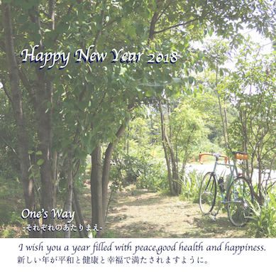

本郷仁さんの作品、年末年始もご覧になれます！
本郷仁さんの作品、年末年始もご覧になれます！
光 resonance 音 ─共鳴する光と音─
会期は平成31年1月7日（月）までとなっております。
時間：10:00〜18:00（最終入館17:30）
※12月31日（月）〜2019年1月2日（水）は〜15:00（最終入館14:30）
場所：秋田県立美術館 3Fギャラリー
料金：一般310円・学生210円・シニア280円・高校生以下無料
詳細は秋田県立美術館のサイト をご覧ください。
をご覧ください。
本郷仁さんについては、 recommendをご覧ください。

本郷仁さんの作品が秋田でご覧になれます！
秋田県立美術館 企画展
光 resonance 音 ─共鳴する光と音─

会期は平成31年1月7日（月）までとなっております。
帰省の折に、年末年始のお休みにご旅行で訪れられてもいいですね。
詳細は秋田県立美術館のサイト をご覧ください。
をご覧ください。
本郷仁さんについては、 recommendをご覧ください。
明日24日（土）には学芸員によるギャラリートークも開催されるようです。

本郷仁さんの個展が砺波市で開催中！
会期は11月4日（日）までの金土日 10:00-17:00、場所は砺波市の「Gallery無量」
詳細はイベントのフライヤー をご覧ください。
をご覧ください。
本郷仁さんについては、 recommendをご覧ください。
会期中には伊藤拓次氏のダンスパフォーマンスも開催されるようです。

ガラス工房○マルさんの秋の期間限定吹きガラス体験開催中！
『ガラスのカボチャを作りましょう！Let's make pumpkins!』
10月30日まで開催中です。
ハロウィーンにむけてのガラスのカボチャオブジェの制作体験です。
世界に一つのカボチャが作れますよ！
詳しくは
こちら をご覧ください。
をご覧ください。
ガラス工房○マルさんについては、 recommendをご覧ください。

タウの木さんが京都百万遍さんの手づくり市に参加されます！
毎月15日に開催されている百万遍さんの手づくり市。今月はタウの木さんが出展されます。

雨天決行 8:00〜16:00
詳しくはこちらをご覧ください。
タウの木さんの紹介も掲載さていますよ！
タウの木 中村ヨウイチさんについては、 recommendもご覧ください。

ガラス工房○マルさんの作品を広島県宮島でご覧になれます！
“夏のガラス展” in ぎゃらりぃ宮郷

2018年7月26日(木)～31日(火) 10:00 ～ 18:00
宮島の町家通りにある素敵な古民家カフェギャラリーとのこと。
会期中、31日にはマルさんご夫妻が在廊されるそうです。
夏の風物詩“風鈴”や涼しいガラスの器や花器、色ガラス作品など、お気に入りが見つかるといいですね！

本郷仁さんの個展が金沢で開催されます！

"Galley O2" にて、本郷仁さんの個展が開催されます。
鏡の板が等間隔で円形に配置された
壁の内側では、鑑賞者は否応なく作品
の一部として取り込まれ、無限増殖す
る自分の姿に視線が泳ぐ。内側と外側
の景色が混ざり合い、自分と…（後略）-----DMより抜粋
"Galley O2"
920-0919 金沢市南町5-12 4F
会期：2018.6.22（金）ー7.22（日）13:00-18:00 水・木 休廊
(7.23-8.10はアポイントメントで開廊)
本郷仁さんについては、 recommendをご覧ください。

イエルバスさんのハーブティー教室を開催します！

One's Wayでイエルバスさんによるハーブティー教室を開催します。
初夏の里山を満喫しながら、ハーブティーを楽しんでいただけることでしょう。また、各自で作るオリジナルハーブブレンドはお持ち帰りいただけるそうです。
日 時：①2018年5月27日（日）13:30～15：00
②2018年5月28日（月）13:30～15：00
参加費：2,000円
定 員：各6名
詳細は、イエルバスさんのfacebookページ でご確認ください。
でご確認ください。
イエルバスさんについては、 recommendをご覧ください。

本郷仁さんの個展が４月15日より開催されます！
「光の瞬き 影のかたち」本郷仁 ガラス造形展

会期は2018年4月18日（水）〜 7月8日（日）となっています。
詳細は妖精の森ガラス美術館のサイト をご確認ください。
をご確認ください。
本郷仁さんについては、 recommendをご覧ください。

タウの木 中村ヨウイチさんの作品を滋賀でご覧になれます！
滋賀県大津市北比良にある『galleryサラ』さんで開催中の『サラノ春』にタウの木さんが出品されています。
会期／2018年3月3日(土)～3月18日(日)
am11：00～pm5：00 火曜日のみ休業
営業時間／am11：00～pm5：00
定休日／火曜日
タウの木の中村ヨウイチさんを含め、16名の作家さんの作品を観ることができるとのことです。
詳しくは『galleryサラ』のサイト をご確認ください。
をご確認ください。
タウの木 中村ヨウイチさんについては、 recommendもご覧ください。

ピンタレストの不具合解消のお知らせ
1月末よりピンタレストの不具合が続いておりましたが、解消されましたのでお知らせします。今後とも、本サイトはもとより、ブログ、ピンタレストへもお越しいただければ幸いです。

タウの木の中村ヨウイチさんの作品を岐阜でご覧になれます！
寒い毎日が続きますが、みなさまいかがお過ごしでしょうか？
One's Way- それぞれのあたりまえ -のイベントに協力いただいていたタウの木の中村ヨウイチさんの作品を岐阜でご覧になれます。
正直に感じたままを形にしたアクセサリーが生む出会いを楽しめることと思います！
詳しくはギャラリー元浜のサイトをご確認ください。
中村ヨウイチさんについては、 recommendをご覧ください。
ガラスのお雛様を作ってみませんか！
ガラス工房◯マルさんが、期間限定の吹きガラス体験を実施中です。
12色の色ガラスからお好みの色を選んで２体のお雛様を作ります。世界に一つのお雛様作りに挑戦してみませんか！
詳しくはガラス工房〇マルのサイトをご確認ください。
ガラス工房〇マルの齋藤裕史さんについては、 recommendをご覧ください。
One’s Wayを本年もよろしくお願いいたします。
あけましておめでとうございます。

One’s Wayが2013年に初めてイベントを開催してから５年が過ぎ、昨年の秋に10回目となりました。
これを区切りとし、今年はOne’s Wayのイベントを開催する予定はありません。が、One’s Wayがオススメする方のイベント情報はこのページでお届けします。
どこかでみなさまとお会いできること楽しみにしています。